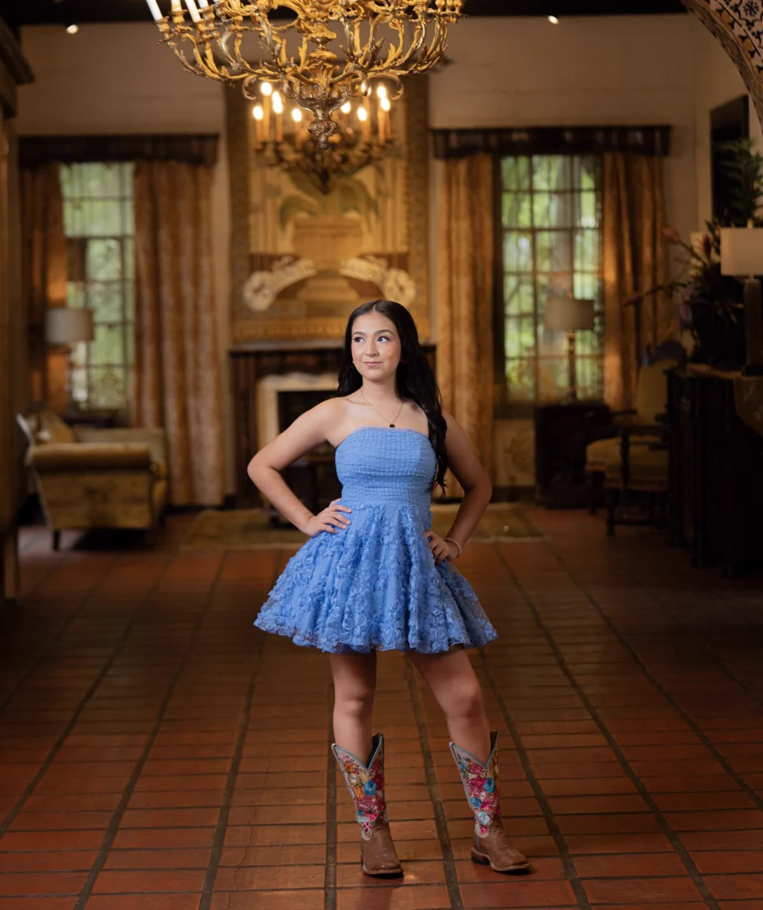
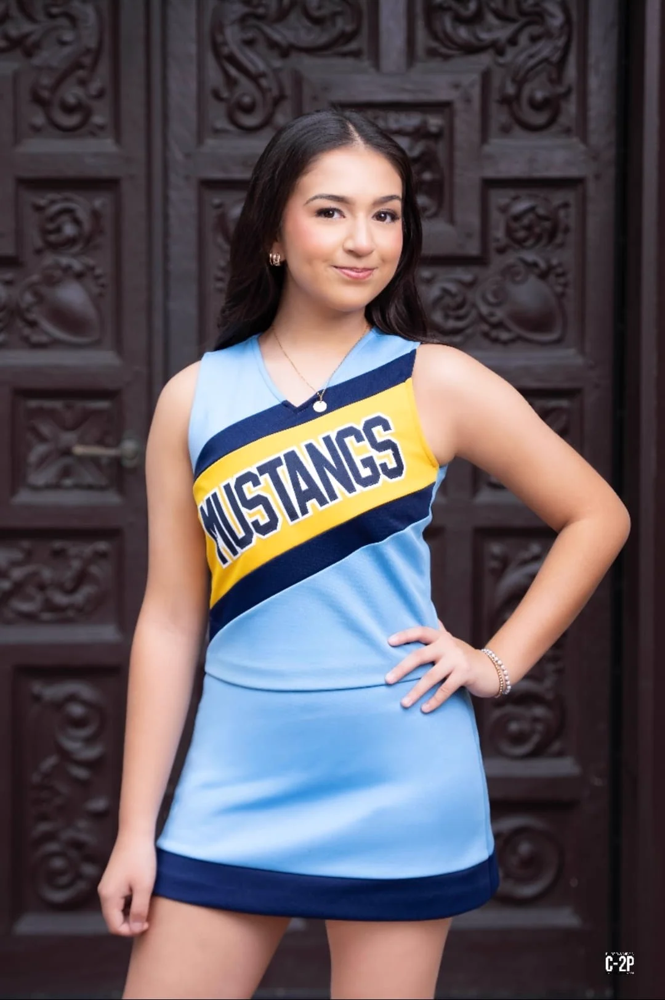
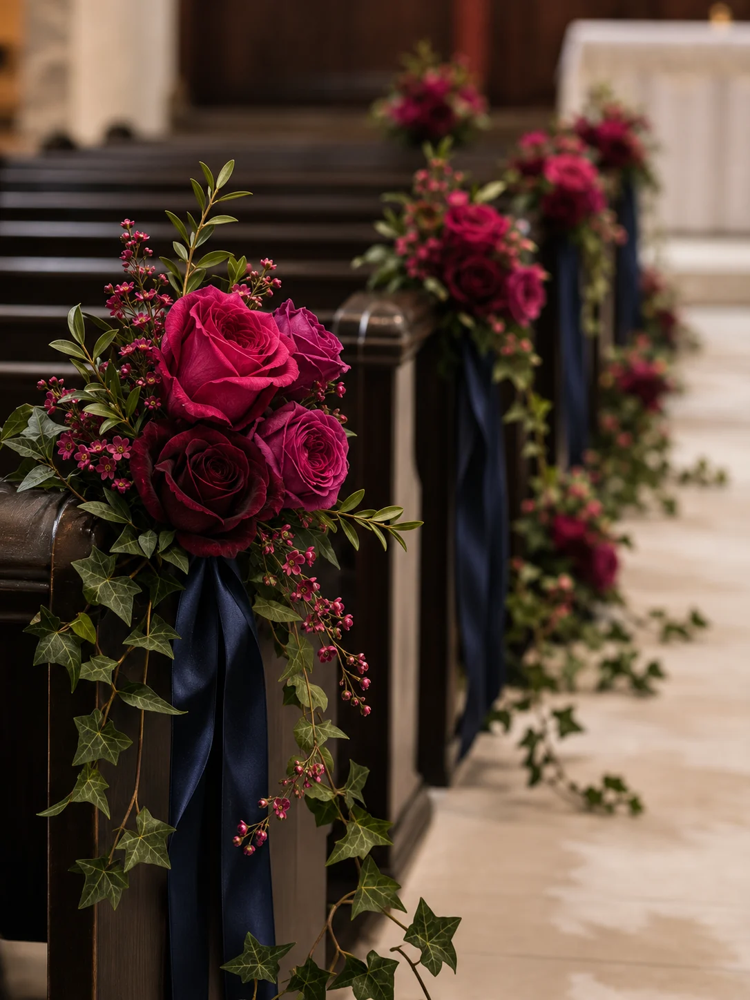

MIS XV AÑOS
04 DE DICIEMBRE DE 2026
Con todo el amor y cariño de mis padres,te invito a celebrar mis quince años.
Karla Y Marroquin
&Jose Luis Marroquin Jr
RESERVA LA FECHA
DICIEMBRE
2026

“Empiezo a crear mi camino”


CEREMONIA RELIGIOSA
San Juan Diego Catholic Church
3408 Idela Ave
McAllen, TX 78503
3:30 p. m.
PROGRAMA
Cena
6:00–8:00 p. m.
Presentación
8:00 p. m.
Baile
8:00 p. m.–12:00 a. m.
Lluvia de sobres
Tu presencia es mi mejor regalo.
Si deseas tener un detalle conmigo,
habrá lluvia de sobres.
Gracias por acompañarme
en una noche tan especial.
Con cariño,